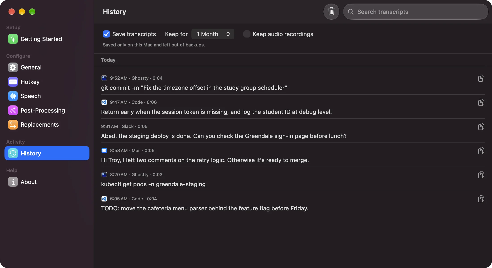

macOS · Linux · on-device speech
Dictation that types into your editor, terminal, or chat.
Hold a shortcut, speak, and let go. Onda transcribes what you said and types it where your cursor is. Speech recognition runs on your computer, so your audio stays there.

What Onda does
The core is shared on macOS and Linux; differences are noted.
- 01
Hold, tap, or both
Hold the shortcut to talk, tap to start and stop, or let Onda tell a tap from a hold. On a Mac, Right Option or Fn can work alone.
- 02
Speech runs locally
Parakeet models cover English and 25 European languages. They run on the Neural Engine on a Mac and on the CPU on Linux.
- 03
Live preview
On a Mac, the overlay shows the transcript while you speak. macOS can also use Apple's built-in speech engine and a Japanese Parakeet model.
- 04
Text goes where the cursor is
Onda types into the focused app or copies to the clipboard. On a Mac it reads the text before the cursor to fix spacing and capitalization.
- 05
Replacements
Rules swap phrases the model keeps getting wrong, like “cube cuddle” for
kubectl. They run on your machine after each dictation. - 06
Optional cleanup
Send the text, never the audio, to OpenRouter or Fireworks with your own key, or to Apple Intelligence on a Mac. It drops filler words and applies “scratch that”.
- 07
Searchable history
Transcripts stay on your computer for a week, a month, or until you delete them. Search them and copy any one again.
- 08
Commands on Linux
onda --toggle,--start,--stop, and--paste-lastlet you bind dictation to any key your desktop allows.